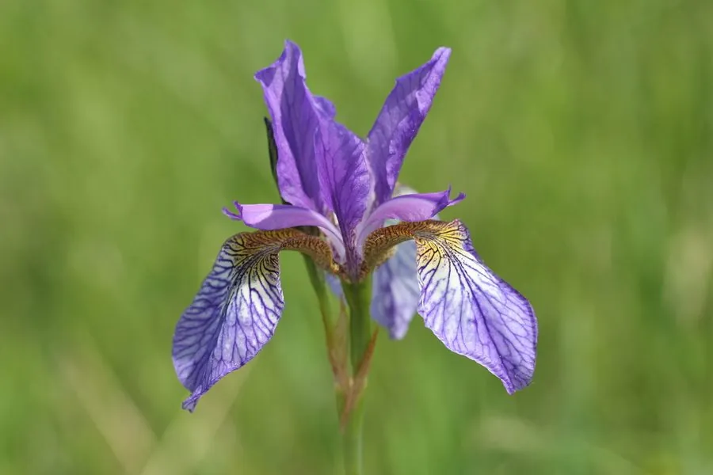

水生植物 · 植物界
西伯利亚鸢尾 Iris sibirica

鸢尾科多年生湿生草本，叶细长如草、花蓝紫而飘逸，极耐寒，是北方水边与花境中栽培普遍的鸢尾。
- 分类
- 门被子植物门纲木兰纲目天门冬目科鸢尾科属鸢尾属
- 栖息环境
- 湿草甸、河岸与池畔，喜光、耐寒、耐湿
- 地理分布
- 原产欧洲中部至西伯利亚，中国北方园林引种栽培
- 保护级别
- 暂无评估；野生居群在欧洲部分国家受湿地丧失影响
物种志
西伯利亚鸢尾为鸢尾科鸢尾属多年生草本，根状茎细密，株高 0.6–1.2 米，丛生。叶片线形，长 40–80 厘米，宽仅 0.5–1 厘米，中脉不明显，质地柔软。花葶细长，着花 2–5 朵，花径 6–10 厘米，蓝紫、淡蓝或白色，垂瓣基部有白色与紫色网纹，花期 5–6 月；蒴果长圆形。
西伯利亚鸢尾原产欧洲中部至俄罗斯西伯利亚的湿草甸与河岸，是分布最北的鸢尾之一，可耐 −30 ℃ 严寒。它喜阳光充足、土壤湿润的环境，可生于水深 5–10 厘米的浅水或湿土中，对土壤要求不严，但在富含腐殖质的中性土壤中开花最佳。因其花姿轻盈、叶丛整齐，适合布置水边、花境与草地边缘，也是优秀的切花；栽培以分株繁殖为主，花后及时剪除花葶可减少养分消耗。
形态与习性
- 株高0.6–1.2 米，叶宽仅 0.5–1 厘米
- 水深可生于 5–10 厘米浅水，也可在湿土中生长
- 水质喜中性土壤与清洁水体，耐短期积水
- 花期5–6 月，单葶着花 2–5 朵
- 耐寒性可耐 −30 ℃ 低温，根状茎露地越冬
- 繁殖分株为主，春秋两季均可进行
趣味知识
- 西伯利亚鸢尾是分布最北的鸢尾之一，西伯利亚的严寒也能露地越冬。
- 它的叶片细如草，花却轻盈如蝶，园艺上常与芍药、萱草搭配布置花境。
- 与常见的德国鸢尾不同，它的根状茎细而不膨大，也没有明显的“胡须”状附属物。
- 花后若不剪除花葶，结实会消耗大量养分，导致翌年花量下降。